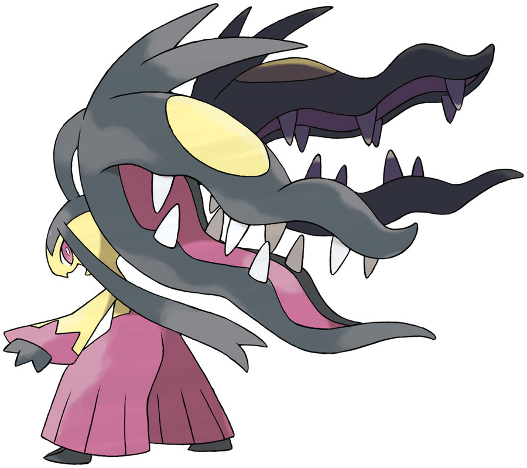
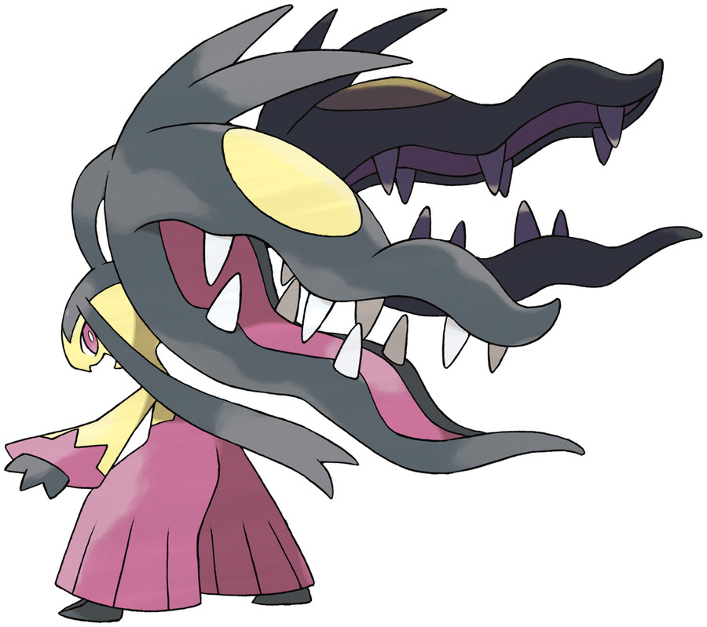
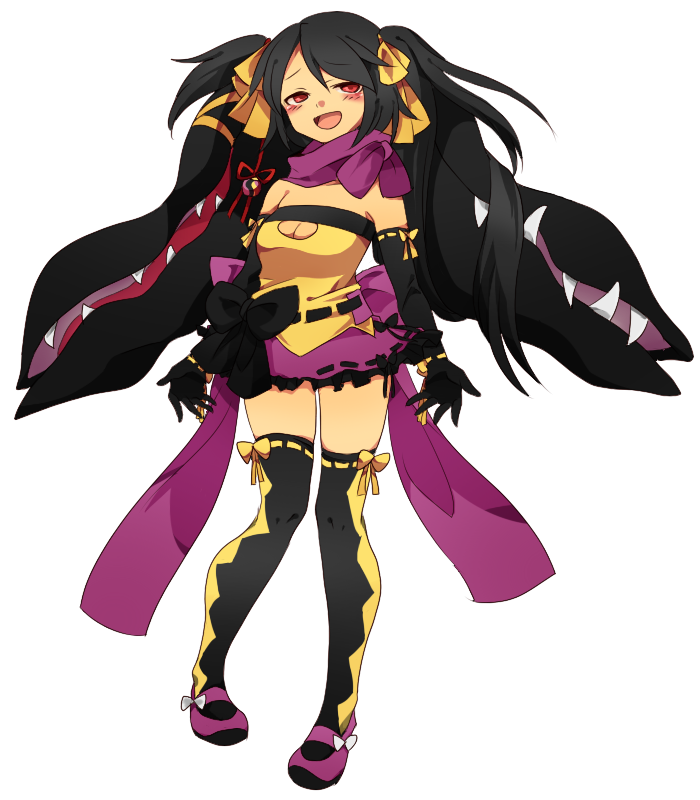

Avery "Ava" Summers
Personality: Avery is the brawn and leader of the Agents. She is a battle fanatic and loves strong trainers. Avery’s humble exterior ironically belies a fearsome disposition though. She is prone to swift acts of violence and dealing out physical harm, often seen cracking her knuckles when she is angry or wants to intimidate. Despite her considerable aggressive nature, Avery is a remarkably warm, caring individual always willing to help those in need, especially children and younger brother, Ethan.
Age: 18
Gender: Female
Eye Color: Pink
Hair Color: Black
Skin Color: Dark Brown
Hometown: Sootopolis City
Home Region: Hoenn
Trivia:
Avery loves to train in the Agents Arena with her team, pushing them to exercise and battle extensively, even to exhaustion.
Avery’s favorite food is cotton candy.
Avery likes action comics and loves to talk to Ethan about them. However, she appears shyly curious about young adult fiction but knows very little about it.
Avery has the biggest appetite out of all the Agents and can easily eat 100 sticks of dango.
Avery and Lillith get along quite well due to them having been the only two female members before Hadori joined the team. Lillith teaches Avery about different types of gothic literature and Avery loves to go on shopping sprees with her.
Pokémon:
 

Mawile/Mega Mawile♀
“Ponytail”
Steel/Fairy
Ability: Sheer Force
Removes additional effects to increase the power of moves when attacking.
Mega Ability: Huge Power
Using her pure power, Ponytail doubles her Attack stat.
Personality: Ponytail has an excitable and wild personality. She also appears extremely territorial and is somewhat of a loner and doesn't mix well with other people, probably due to having a lack of social development.
MOVES:
Play Rough (Fairy)
Ponytail jumps towards the opponent and cloaks it with a thick, white smoke surrounded by stars. She then hits the opponent multiple times.
Crunch (Dark)
The teeth of Ponytail's second mouth glow white and she uses it to bite down on the foe.
Rock Tomb (Rock)
Multiple gray rocks outlined in white energy form around Ponytail and she throws them to surround the opponent.
Iron Head (Steel)
Ponytail's body becomes surrounded by a white aura, making her seem black and white, and she slams into the opponent.

BURST
As a user of Burst, Avery can use many of the abilities of the Pokémon she combines with Ponytail, her Mega Mawile. Combining with Ponytail gives Avery an immense boost in strength and durability along with the monster mouths on the back of her head.
TECHNIQUES:
Avery uses her left jaw to hold up an enemy and attacks the foe with powerful punches.
Avery uses her twin jaws like fists and uses them to rapidly punch an enemy.
Avery uses her twin jaws to grab a foe and repeatedly slam them into the ground. After a crater is formed, Avery jumps into it and uses Play Rough on the enemy to finish the job.